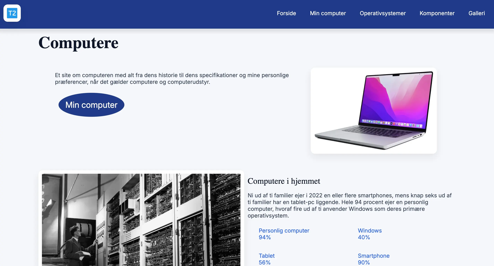
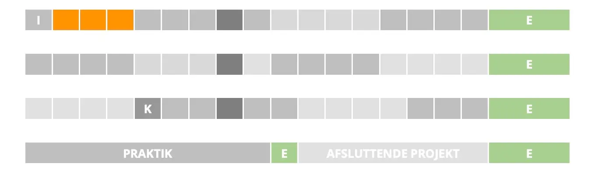
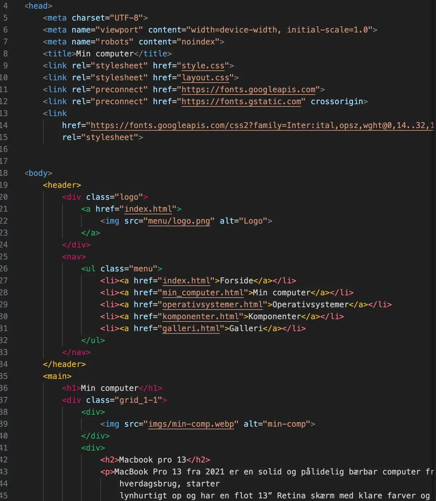
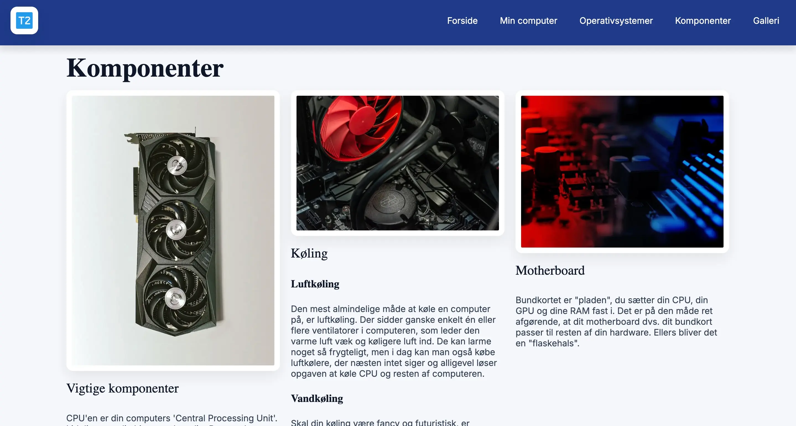
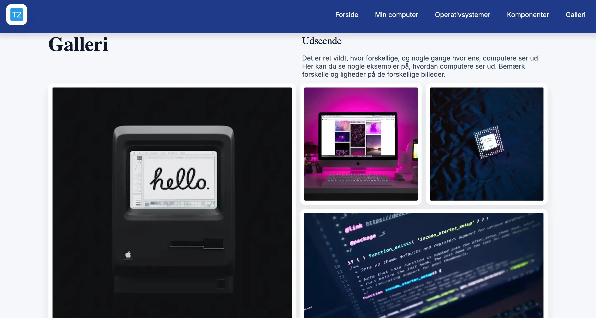

Grundlæggende web

Temaet
I dette forløb fik jeg min første introduktion til webudvikling og de værktøjer, der danner grundlaget for multimediedesign. Jeg lærte at opbygge hjemmesider med HTML og CSS samt at forstå, hvordan struktur, design og indhold arbejder sammen for at skabe en brugervenlig oplevelse.

Formålet
Formålet med forløbet var at give en grundlæggende forståelse for udvikling af websites. Gennem arbejdet med kode, designprincipper og digitale brugergrænseflader opbyggede jeg de første tekniske færdigheder, som senere blev fundamentet for mere avancerede projekter på uddannelsen.

Proces
Jeg startede med at lære den grundlæggende struktur i HTML og CSS. Herefter arbejdede jeg med navigation, logo, billeder og tekstopsætning samt simple layoutløsninger. Undervejs lærte jeg også at organisere filer korrekt og opbygge et website med flere undersider og sammenhængende design.

Løsning
Resultatet blev et responsivt website om computere, hvor jeg anvendte de teknikker, jeg havde lært. Sitet indeholdt blandt andet navigation, billedgalleri, informationssider og forskellige sektioner opbygget med HTML og CSS. Projektet gav mig en praktisk forståelse for, hvordan et website bliver udviklet fra idé til færdigt produkt.

Erfaring og refleksion
Dette projekt var mit første møde med webudvikling, og jeg lærte vigtigheden af semantisk HTML, strukturering af kode og responsivt design. Selvom løsningen var simpel sammenlignet med mine nuværende projekter, gav den mig et solidt fundament inden for frontend-udvikling og forståelse for, hvordan websites bygges op fra bunden.